1. Revisión de la propuesta (imagen "Opción B")
La idea general es buena y se mantiene: casa de dos pisos con un lado abierto, compartimento técnico aparte, techo removible, panel físico y portátil con la web. Estos puntos deben ajustarse para que coincidan con el circuito y el firmware que ya funcionan:
| En la propuesta | Cómo queda | Por qué |
|---|---|---|
| Panel con 4 botones: Inicio, Alarma, Modo, Reset | Panel con pulsador de MODO (6 pines, con enclavamiento), botón RESET y 4 potenciómetros | Los 23 pines útiles del ESP32 ya están ocupados. El RESET va al pin EN (no usa GPIO). El modo seguridad y la prueba de alarma se manejan desde la web o por voz. |
| Potenciómetros: umbral T°, vel. ventilador, apertura cortina, sensibilidad touch | P1 luz ambiente (simula), P2 gas (simula), P3 consigna °C, P4 brillo | El relé solo enciende o apaga, así que no se puede variar la velocidad. La sensibilidad del KY-036 se ajusta con el potenciómetro azul del propio módulo. La cortina es automática según la luz. |
| Ventana vigilada: touch + reed + servo | Ventana: KY-036 + servo. El reed va en la puerta | El firmware usa el reed para el acceso RFID, la puerta forzada y la intrusión por puerta. |
| "Marco metálico" de la ventana | Marco de madera o impreso forrado con cinta de aluminio | La maqueta es de madera: la cinta es la superficie conductora que conecta con el KY-036. |
| Sensor de temperatura "DHT22/DS18B20" | KY-028 | Es el que tienen. Va en una pared interior, lejos del ventilador. |
| Módulo de distribución "3.3 V" | Solo fuente de 5 V + riel de 3.3 V que sale del pin 3V3 del ESP32 | No hay ni hace falta una fuente de 3.3 V aparte. |
| Relé para "ventilador, alarma, etc." | Relé solo para el ventilador | Los buzzers van directo a sus pines. |
| Un solo buzzer | Dos buzzers: sirena (fachada) y timbre (interior) | El firmware distingue alarma y timbre o confirmaciones. |
| — | Agregar: botón de timbre en la fachada, LED de luz, pasacables, cara del lector RFID afuera | No aparecían en la propuesta. |
| Cortina tipo persiana con el motor a la vista | Cortina enrollable por dentro de la ventana | El motor está por dentro, sobre la ventana, y el eje mueve un rodillo de madera de 8 mm. |
2. Vistas 3D
El lado izquierdo de la casa queda abierto para ver el interior y los mecanismos durante la sustentación. El techo y la tapa del compartimento se retiran.
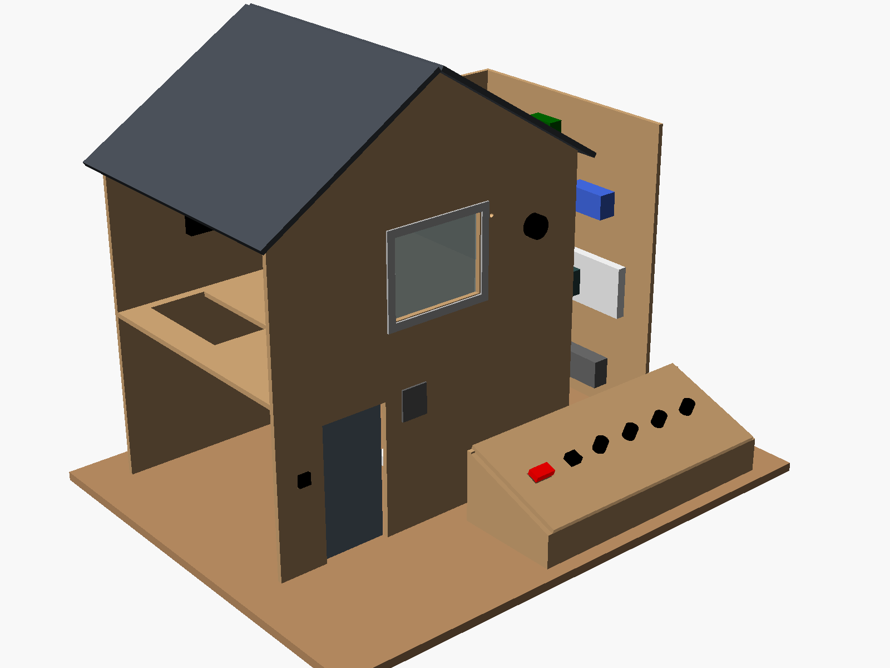
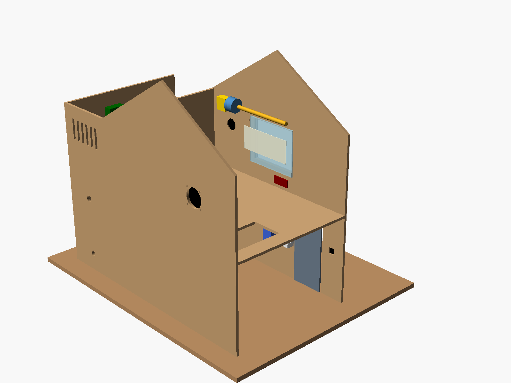
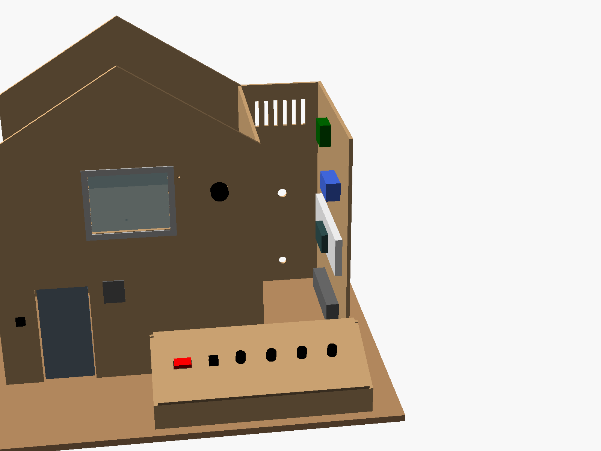
| Medida | Valor |
|---|---|
| Base | 560 × 450 mm (MDF o triplex de 9 mm) |
| Casa (sin compartimento) | 350 × 260 mm; muros de 325 mm + cumbrera de 110 mm (alto total ≈ 440 mm) |
| Pisos | Planta baja de 170 mm libres; planta alta de 150 mm |
| Compartimento técnico | 120 × 260 × 325 mm, adosado a la derecha |
| Panel de control | 280 × 110 mm, inclinado (35 → 75 mm), delante del compartimento |
3. Materiales
| Material | Cantidad | Uso |
|---|---|---|
| MDF o triplex de 5 mm | ≈ 0,9 m² (por ejemplo, 2 láminas de 60 × 80 cm) | Muros, entrepiso, techo, compartimento y panel |
| MDF o triplex de 9 mm | 560 × 450 mm | Base |
| Listón de 10 × 10 mm | ≈ 2,5 m | Esquineros y apoyos del entrepiso (pegados por dentro) |
| Palo redondo (dowel) de 8 mm | 15 cm | Rodillo de la cortina |
| Acrílico de 3 mm o acetato grueso | 110 × 90 mm | Vidrio corredizo de la ventana |
| Tela delgada o cartulina | 110 × 110 mm | Cortina enrollable (con un palito de peso abajo) |
| Cinta de aluminio (la de ductos) | 1 rollo pequeño | "Marcos metálicos" vigilados por el KY-036 |
| Hilo de nylon (pesca) y ligas | 1 m / 4 ligas | Ventana y pestillo: el servo tira del hilo y la liga regresa |
| Imanes de neodimio pequeños (≈ 10 × 3 mm) | 3–5 | Imán del reed y cierre de la tapa del compartimento |
| Bisagras pequeñas (o cinta de tela) | 2 | Puerta |
| Tornillos M3 × 10 y tornillos de madera de 2,5 mm | ≈ 30 | Soportes, motor, servos y ventilador |
| Cables dupont macho-hembra de 20 y 30 cm, y cable de calibre 22 AWG | Según recorrido | De los componentes al compartimento |
| Cola blanca, silicona caliente, cinta doble faz, cintillos | — | Ensamble y orden de cables |
4. Lista de cortes en madera
Cada pieza tiene su plano SVG a escala 1:1 en milímetros, con todas las aberturas. Sirve para cortadora láser o para imprimir y pegar como plantilla sobre la madera (en papel de 1:1, por partes). Las medidas ya consideran el espesor de 5 mm.
| Pieza | Cant. | Medida (mm) | Aberturas | Plano |
|---|---|---|---|---|
| Fachada (frente) | 1 | 350 × 325 + triángulo de 110 | Puerta 70 × 140 · ventana 100 × 80 · timbre 12,6 × 12,6 · sirena Ø23,5 · cable KY-036 Ø4 | frente.svg |
| Pared trasera | 1 | 350 × 325 + triángulo de 110 | Ventilador Ø37 + 4 tornillos a 32 mm | trasera.svg |
| Pared compartida (casa | compartimento) | 1 | 250 × 325 | 4 pasacables de Ø16 | pared_compartida.svg |
| Entrepiso | 1 | 345 × 250 | LED Ø5,2 · hueco de escalera 60 × 110 (decorativo) | entrepiso.svg |
| Techo | 2 | 219 × 284 | — | techo.svg |
| Compartimento: trasera | 1 | 120 × 325 | USB Ø14 · entrada de 5 V Ø12 · 6 ranuras de ventilación | comp_trasera.svg |
| Compartimento: lateral | 1 | 250 × 325 | — (aquí van atornillados la protoboard, el relé y el ULN2003) | comp_lateral.svg |
| Compartimento: tapa frontal | 1 | 120 × 325 | Agujero de dedo Ø18 (se fija con imanes) | comp_frente.svg |
| Compartimento: tapa superior | 1 | 120 × 260 | — | comp_tapa.svg |
| Base (9 mm) | 1 | 560 × 450 | — | base.svg |
| Panel: laterales | 2 | Trapecio 110 × (35 / 75) | — | panel_lado.svg |
| Panel: frente | 1 | 280 × 35 | — | panel_frente.svg |
| Panel: trasera | 1 | 280 × 75 | Salida de cables Ø14 | panel_trasera.svg |
| Panel: tapa inclinada | 1 | 270 × 117 | 4 potenciómetros Ø7,5 · MODO (ver nota) · RESET 12,6 × 12,6 | panel_tapa.svg |
| Puerta (hoja) | 1 | 68 × 138 (3–5 mm) | — | puerta.svg |
| Marco de la ventana | 1 | 116 × 96, con ancho de 8 mm | Se forra con cinta de aluminio | marco_ventana.svg |


5. Piezas impresas (o su alternativa en madera)
Archivos STL en maqueta/piezas_stl/. Imprime en PLA con 20 % de relleno; no requieren soportes si se apoyan sobre su cara plana. Si no tienen impresora, cada una tiene una alternativa sencilla.
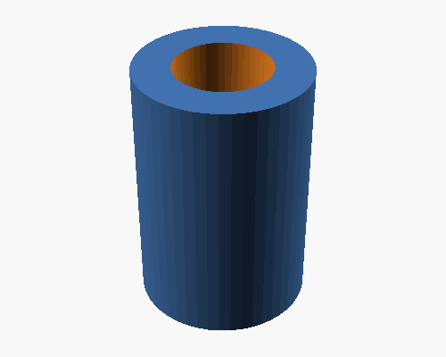
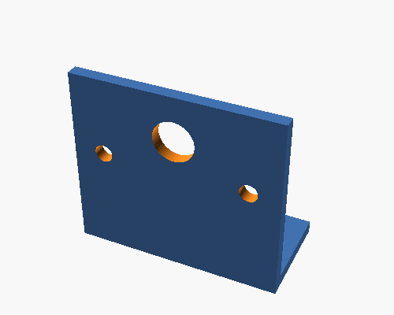
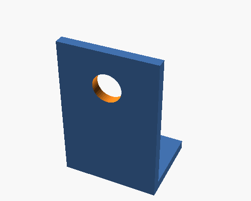
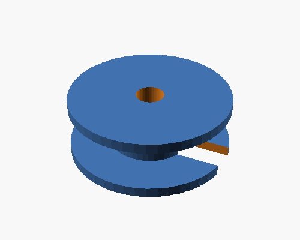
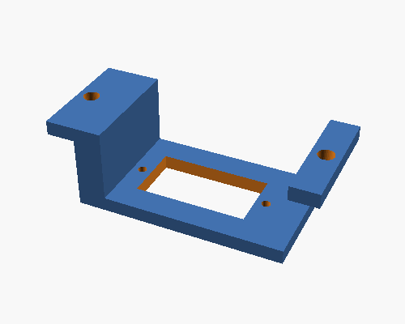
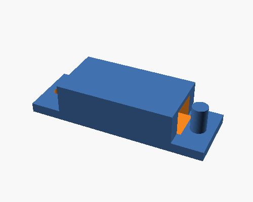
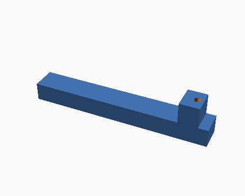
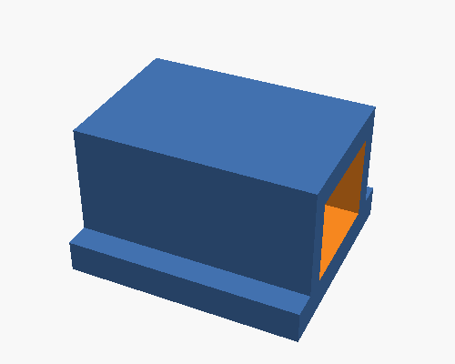
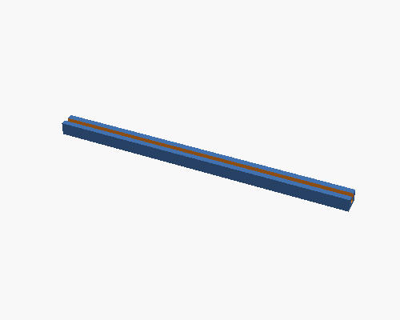
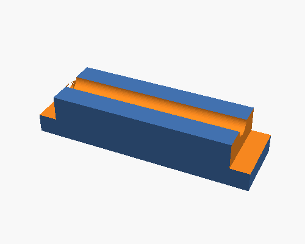
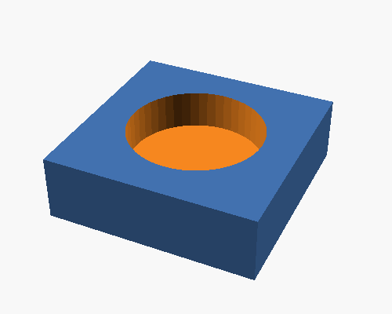
6. Mecanismos
Cortina enrollable (28BYJ-48 + ULN2003)
- El motor va en su soporte, por dentro de la fachada, a la derecha y encima de la ventana. Su eje queda horizontal y a 22 mm del muro.
- El acople une el eje con el palo de 8 mm (≈ 125 mm). El otro extremo gira en el soporte del rodillo.
- Pega la tela al rodillo con cinta doble faz y ponle un palito abajo para que caiga recta.
- Al encender el ESP32, la cortina debe estar cerrada (abajo). Calibra PASOS_CORTINA con la opción c del programa de pruebas.
Ventana corrediza (servo continuo + hilo + liga)
- Dos rieles en la cara interior, arriba y abajo de la abertura, de x = 120 a 340 mm. El vidrio de 110 × 90 se desliza a la derecha para abrir.
- El servo va sobre el riel superior, separado 15 mm del muro con un taco, para que el vidrio pase por debajo sin chocar.
- El hilo va del carrete del servo a la esquina superior derecha del vidrio. Una liga, desde la esquina izquierda hasta un clavito a la izquierda de la ventana, lo devuelve a cerrado.
- Así un servo continuo nunca empuja: al "abrir" enrolla el hilo y al "cerrar" lo suelta y la liga hace el trabajo. Calibra con la opción v.
Pestillo de la puerta (servo continuo + hilo + liga)
- La puerta abre hacia adentro. La guía del pestillo se atornilla en la cara interior del muro, a la derecha de la puerta, a ≈ 70 mm de altura. El cerradero va pegado en la hoja.
- La liga, entre el tope del cerrojo y el pasador de la guía, mantiene el pestillo cerrado. El servo, al lado, enrolla el hilo y tira del cerrojo para abrir.
- Calibra con la opción p. Así, aunque el servo gire un poco de más, solo se tensa la liga.
Marcos vigilados (KY-036)
- Forra el marco de la ventana (y si quieres, el de la puerta) con cinta de aluminio, por la cara de afuera.
- Pasa un cable delgado por el agujero de Ø4 junto a la ventana, desde la cinta hasta la pata metálica del KY-036, que va por dentro, debajo de la ventana. Usa un cable lo más corto posible.
- Si hay varios marcos, únelos entre sí con cinta o cable: todos quedan vigilados por el mismo sensor.
Puerta: reed + imán
- El reed va en su soporte sobre el marco superior de la puerta, por dentro. El imán va en su soporte, en el canto superior de la hoja. Con la puerta cerrada, deben quedar a menos de 10 mm.
7. Ubicación de cada componente
| Componente | Dónde va | Fijación | Cable por |
|---|---|---|---|
| RFID RC522 | Cara interior de la fachada, a la derecha de la puerta, entre 100 y 160 mm de alto. Afuera, una plaquita marca dónde acercar la tarjeta | Cinta doble faz (lee a través de 5 mm de madera) | Pasacables inferior delantero |
| Botón del timbre | Fachada, a la izquierda de la puerta (agujero de 12,6 mm) | Silicona por dentro | Pasacables inferior delantero |
| Pestillo (servo 1) + reed | Interior, junto a la puerta | Tornillos / silicona | Pasacables inferior delantero |
| Buzzer del timbre | Interior de la planta baja, en la pared compartida | Silicona | Pasacables central |
| LED de luz | Agujero central del entrepiso (alumbra la planta baja) | Silicona desde arriba | Pasacables trasero superior |
| Motor de la cortina | Planta alta, encima y a la derecha de la ventana | Soporte con tornillos M4 | Pasacables superior delantero → ULN2003 |
| Servo de la ventana (servo 2) | Sobre el riel superior, separado 15 mm del muro | Soporte + taco | Pasacables superior delantero |
| KY-036 | Debajo de la ventana, por dentro | Cinta doble faz | Pasacables superior delantero |
| Sirena (buzzer de alarma) | Fachada, a la derecha de la ventana (agujero de Ø23,5) | A presión + silicona | Pasacables superior delantero |
| Ventilador | Pared trasera, planta alta (sopla hacia afuera) | 4 tornillos | Pasacables trasero superior → relé |
| KY-028 (temperatura) | Planta alta, pared compartida, a media altura y lejos del ventilador | Cinta doble faz | Pasacables trasero superior |
| ESP32, protoboard, relé, ULN2003, bornera de 5 V | Compartimento técnico, atornillados a la pared lateral: ULN2003 arriba, relé, protoboard al medio y bornera abajo | Tornillos / doble faz | USB y 5 V por la trasera del compartimento |
8. Panel de control físico
| Elemento | Rótulo sugerido | Conexión |
|---|---|---|
| Pulsador de 6 pines con enclavamiento | MODO · hundido = Automático | Una fila: medio → D22, un extremo → GND (ver montaje, diagrama 6) |
| Pulsador | RESET | EN y GND (reinicia el ESP32; no usa un GPIO) |
| Potenciómetro 1 | Luz ambiente (simulada) | Centro → D33 |
| Potenciómetro 2 | Gas (simulado) | Centro → D34 |
| Potenciómetro 3 | Consigna °C (18–32) | Centro → D35 |
| Potenciómetro 4 | Brillo de la luz | Centro → VP (36) |
9. Paso a paso
- Corta todas las piezas. Imprime los SVG a escala 1:1 (en el diálogo de impresión, "tamaño real" o 100 %), pégalos en la madera y corta. Lija los bordes.
- Haz las aberturas (puerta, ventana, agujeros): taladro + sierra de calar, o bisturí si es MDF de 3 mm.
- Pinta las piezas antes de armar (es más fácil). Deja sin pintar la zona del marco de la ventana donde va la cinta de aluminio.
- Arma la casa sobre la base: pega la fachada, la trasera y la pared compartida con cola y listones de 10 × 10 en las esquinas interiores. Comprueba la escuadra.
- Entrepiso: pega listones a 170 mm de altura en las tres paredes y apoya el entrepiso encima. Déjalo sin pegar hasta terminar el cableado de la planta baja.
- Compartimento: pega la trasera y el lateral. La tapa frontal se sujeta con imanes y la superior solo se apoya.
- Panel: arma la caja inclinada y monta el pulsador de MODO, el RESET y los 4 potenciómetros antes de pegarlo a la base.
- Instala los mecanismos (sección 6) y prueba cada uno a mano antes de conectarlo.
- Cablea por etapas siguiendo montaje.html, con el programa de pruebas: sensores primero y motores al final.
- Calibra los servos (p, v) y la cortina (c), ajusta el KY-036 y carga el firmware principal.
- Techo: las dos aguas se apoyan sobre los muros. Pega dos topes por debajo para que no se deslicen, pero no las pegues: deben poder retirarse.
10. Cambiar medidas y regenerar los archivos
Todas las medidas están al inicio de maqueta/maqueta.scad. Para verlo, abre el archivo con OpenSCAD (ya está instalado) y pulsa F5. Después de cambiar algo, regenera todo con:
cd casa-multimodal/maqueta python generar.py
Así se actualizan los planos (corte_madera/*.svg), las piezas (piezas_stl/*.stl) y las imágenes de este manual.